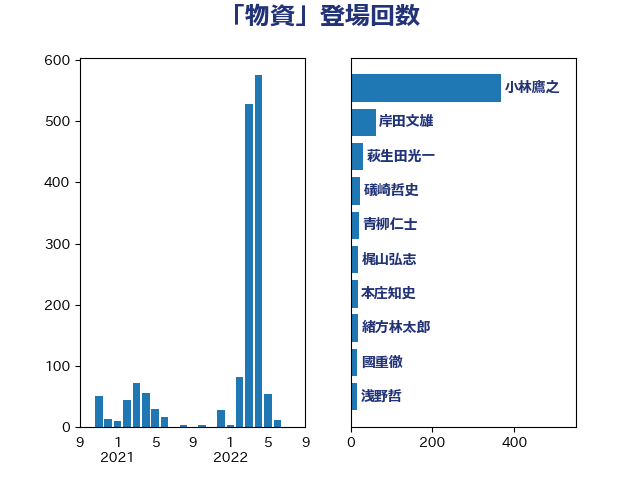

単語「物資」

| 小林鷹之 | 自由民主党 | 367 回 |
| 岸田文雄 | 自由民主党 | 61 回 |
| 萩生田光一 | 自由民主党 | 30 回 |
| 礒崎哲史 | 国民民主党 | 24 回 |
| 青柳仁士 | 日本維新の会 | 20 回 |
| 梶山弘志 | 自由民主党 | 19 回 |
| 本庄知史 | 立憲民主党 | 17 回 |
| 緒方林太郎 | 無所属 | 17 回 |
| 國重徹 | 公明党 | 16 回 |
| 浅野哲 | 国民民主党 | 16 回 |
| 堀場幸子 | 日本維新の会 | 15 回 |
| 大野敬太郎 | 自由民主党 | 15 回 |
| 柴田巧 | 日本維新の会 | 15 回 |
| 高木かおり | 日本維新の会 | 15 回 |
| 塩川鉄也 | 日本共産党 | 14 回 |
| 高橋光男 | 公明党 | 12 回 |
| 塩田博昭 | 公明党 | 11 回 |
| 小寺裕雄 | 自由民主党 | 10 回 |
| 茂木敏充 | 自由民主党 | 10 回 |
| 中野洋昌 | 公明党 | 9 回 |
| 林芳正 | 自由民主党 | 9 回 |
| 田村智子 | 日本共産党 | 9 回 |
| 石川大我 | 立憲民主党 | 9 回 |
| 篠原豪 | 立憲民主党 | 9 回 |
| 高木啓 | 自由民主党 | 9 回 |
| 吉田宣弘 | 公明党 | 8 回 |
| 平将明 | 自由民主党 | 7 回 |
| 後藤茂之 | 自由民主党 | 7 回 |
| 西村康稔 | 自由民主党 | 7 回 |
| 鈴木敦 | 国民民主党 | 7 回 |
| 伊佐進一 | 公明党 | 6 回 |
| 城井崇 | 立憲民主党 | 6 回 |
| 太田房江 | 自由民主党 | 6 回 |
| 尾崎正直 | 自由民主党 | 6 回 |
| 森山浩行 | 立憲民主党 | 6 回 |
| 若宮健嗣 | 自由民主党 | 6 回 |
| 菅義偉 | 自由民主党 | 6 回 |
| 鎌田さゆり | 立憲民主党 | 6 回 |
| 阿部司 | 日本維新の会 | 6 回 |
| 小山展弘 | 立憲民主党 | 5 回 |
| 山岸一生 | 立憲民主党 | 5 回 |
| 杉尾秀哉 | 立憲民主党 | 5 回 |
| 田村貴昭 | 日本共産党 | 5 回 |
| 羽田次郎 | 立憲民主党 | 5 回 |
| 赤羽一嘉 | 公明党 | 5 回 |
| 大石あきこ | れいわ新選組 | 4 回 |
| 大野泰正 | 自由民主党 | 4 回 |
| 安江伸夫 | 公明党 | 4 回 |
| 宮本周司 | 自由民主党 | 4 回 |
| 小沼巧 | 立憲民主党 | 4 回 |
| 小野寺五典 | 自由民主党 | 4 回 |
| 小野泰輔 | 日本維新の会 | 4 回 |
| 山田賢司 | 自由民主党 | 4 回 |
| 山谷えり子 | 自由民主党 | 4 回 |
| 岸信夫 | 自由民主党 | 4 回 |
| 斉藤鉄夫 | 公明党 | 4 回 |
| 片山大介 | 日本維新の会 | 4 回 |
| 田村まみ | 国民民主党 | 4 回 |
| 石原宏高 | 自由民主党 | 4 回 |
| 青木愛 | 立憲民主党 | 4 回 |
| 井上哲士 | 日本共産党 | 3 回 |
| 井坂信彦 | 立憲民主党 | 3 回 |
| 今枝宗一郎 | 自由民主党 | 3 回 |
| 古川元久 | 国民民主党 | 3 回 |
| 古賀友一郎 | 自由民主党 | 3 回 |
| 大串博志 | 立憲民主党 | 3 回 |
| 大口善徳 | 公明党 | 3 回 |
| 小西洋之 | 立憲民主党 | 3 回 |
| 山本博司 | 公明党 | 3 回 |
| 朝日健太郎 | 自由民主党 | 3 回 |
| 江島潔 | 自由民主党 | 3 回 |
| 河西宏一 | 公明党 | 3 回 |
| 田村憲久 | 自由民主党 | 3 回 |
| 菅家一郎 | 自由民主党 | 3 回 |
| 鈴木俊一 | 自由民主党 | 3 回 |
| 鈴木貴子 | 自由民主党 | 3 回 |
| 高市早苗 | 自由民主党 | 3 回 |
| ながえ孝子 | 無所属 | 2 回 |
| 三浦信祐 | 公明党 | 2 回 |
| 中川郁子 | 自由民主党 | 2 回 |
| 伊東良孝 | 自由民主党 | 2 回 |
| 国定勇人 | 自由民主党 | 2 回 |
| 大西健介 | 立憲民主党 | 2 回 |
| 太栄志 | 立憲民主党 | 2 回 |
| 小沢雅仁 | 立憲民主党 | 2 回 |
| 小泉進次郎 | 自由民主党 | 2 回 |
| 山田太郎 | 自由民主党 | 2 回 |
| 山際大志郎 | 自由民主党 | 2 回 |
| 岡田克也 | 立憲民主党 | 2 回 |
| 平木大作 | 公明党 | 2 回 |
| 日下正喜 | 公明党 | 2 回 |
| 有村治子 | 自由民主党 | 2 回 |
| 根本幸典 | 自由民主党 | 2 回 |
| 森田俊和 | 立憲民主党 | 2 回 |
| 武田良太 | 自由民主党 | 2 回 |
| 河野義博 | 公明党 | 2 回 |
| 浜地雅一 | 公明党 | 2 回 |
| 清水真人 | 自由民主党 | 2 回 |
| 渡辺周 | 立憲民主党 | 2 回 |
| 漆間譲司 | 日本維新の会 | 2 回 |
| 盛山正仁 | 自由民主党 | 2 回 |
| 石川昭政 | 自由民主党 | 2 回 |
| 福島みずほ | 社会民主党 | 2 回 |
| 竹内真二 | 公明党 | 2 回 |
| 若松謙維 | 公明党 | 2 回 |
| 赤嶺政賢 | 日本共産党 | 2 回 |
| 赤澤亮正 | 自由民主党 | 2 回 |
| 足立康史 | 日本維新の会 | 2 回 |
| 辻清人 | 自由民主党 | 2 回 |
| 金子恵美 | 立憲民主党 | 2 回 |
| 長坂康正 | 自由民主党 | 2 回 |
| 青山大人 | 立憲民主党 | 2 回 |
| こやり隆史 | 自由民主党 | 1 回 |
| 下野六太 | 公明党 | 1 回 |
| 中山展宏 | 自由民主党 | 1 回 |
| 中島克仁 | 立憲民主党 | 1 回 |
| 中西祐介 | 自由民主党 | 1 回 |
| 井上信治 | 自由民主党 | 1 回 |
| 井上英孝 | 日本維新の会 | 1 回 |
| 佐藤英道 | 公明党 | 1 回 |
| 北神圭朗 | 無所属 | 1 回 |
| 古川俊治 | 自由民主党 | 1 回 |
| 古川禎久 | 自由民主党 | 1 回 |
| 吉田はるみ | 立憲民主党 | 1 回 |
| 吉良州司 | 無所属 | 1 回 |
| 和田政宗 | 自由民主党 | 1 回 |
| 和田義明 | 自由民主党 | 1 回 |
| 堀井巌 | 自由民主党 | 1 回 |
| 大島敦 | 立憲民主党 | 1 回 |
| 宮路拓馬 | 自由民主党 | 1 回 |
| 小倉將信 | 自由民主党 | 1 回 |
| 小熊慎司 | 立憲民主党 | 1 回 |
| 小野田紀美 | 自由民主党 | 1 回 |
| 山下芳生 | 日本共産党 | 1 回 |
| 山崎誠 | 立憲民主党 | 1 回 |
| 山本香苗 | 公明党 | 1 回 |
| 工藤彰三 | 自由民主党 | 1 回 |
| 徳永エリ | 立憲民主党 | 1 回 |
| 徳永久志 | 立憲民主党 | 1 回 |
| 掘井健智 | 日本維新の会 | 1 回 |
| 本田太郎 | 自由民主党 | 1 回 |
| 杉田水脈 | 自由民主党 | 1 回 |
| 東徹 | 日本維新の会 | 1 回 |
| 松原仁 | 立憲民主党 | 1 回 |
| 松野博一 | 自由民主党 | 1 回 |
| 森まさこ | 自由民主党 | 1 回 |
| 森屋隆 | 立憲民主党 | 1 回 |
| 橋本聖子 | 無所属 | 1 回 |
| 櫻井周 | 立憲民主党 | 1 回 |
| 武見敬三 | 自由民主党 | 1 回 |
| 武部新 | 自由民主党 | 1 回 |
| 江田憲司 | 立憲民主党 | 1 回 |
| 泉健太 | 立憲民主党 | 1 回 |
| 浜口誠 | 国民民主党 | 1 回 |
| 浦野靖人 | 日本維新の会 | 1 回 |
| 片山さつき | 自由民主党 | 1 回 |
| 牧野たかお | 自由民主党 | 1 回 |
| 玉木雄一郎 | 国民民主党 | 1 回 |
| 田中健 | 国民民主党 | 1 回 |
| 田名部匡代 | 立憲民主党 | 1 回 |
| 田島麻衣子 | 立憲民主党 | 1 回 |
| 田野瀬太道 | 無所属 | 1 回 |
| 石井正弘 | 自由民主党 | 1 回 |
| 石井浩郎 | 自由民主党 | 1 回 |
| 神津たけし | 立憲民主党 | 1 回 |
| 福山哲郎 | 立憲民主党 | 1 回 |
| 福岡資麿 | 自由民主党 | 1 回 |
| 福重隆浩 | 公明党 | 1 回 |
| 秋野公造 | 公明党 | 1 回 |
| 稲津久 | 公明党 | 1 回 |
| 穀田恵二 | 日本共産党 | 1 回 |
| 竹谷とし子 | 公明党 | 1 回 |
| 笠井亮 | 日本共産党 | 1 回 |
| 緑川貴士 | 立憲民主党 | 1 回 |
| 美延映夫 | 日本維新の会 | 1 回 |
| 舞立昇治 | 自由民主党 | 1 回 |
| 芳賀道也 | 国民民主党 | 1 回 |
| 蓮舫 | 立憲民主党 | 1 回 |
| 藤岡隆雄 | 立憲民主党 | 1 回 |
| 西田昌司 | 自由民主党 | 1 回 |
| 西銘恒三郎 | 自由民主党 | 1 回 |
| 赤木正幸 | 日本維新の会 | 1 回 |
| 逢坂誠二 | 立憲民主党 | 1 回 |
| 野中厚 | 自由民主党 | 1 回 |
| 野間健 | 立憲民主党 | 1 回 |
| 鈴木義弘 | 国民民主党 | 1 回 |
| 鈴木隼人 | 自由民主党 | 1 回 |
| 音喜多駿 | 日本維新の会 | 1 回 |
| 高橋千鶴子 | 日本共産党 | 1 回 |
| 高階恵美子 | 自由民主党 | 1 回 |
| 鰐淵洋子 | 公明党 | 1 回 |
| 麻生太郎 | 自由民主党 | 1 回 |